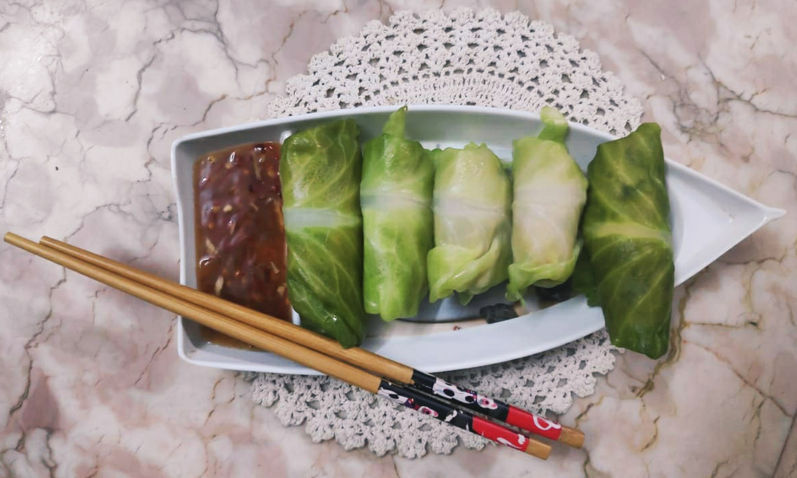

CABBAGE CHICKEN ROLL
In frame is cabbage roll is a dish consisting of cooked cabbage leaves wrapped around a variety of fillings.
Cabbage leaves are stuffed with the filling which are then baked, simmered,
or steamed in a covered pot and generally eaten warm, often accompanied with a sauce.
INGREDIENTS :
1 big cabbage
1 kg minced chicken
1 tablespoon ginger& garlic paste
1 chopped onion, 1 green chilli
1/2 tablespoon vinegar,soy sauce
1/2 spoon Grama masala,lal mirch powder
salt according to the taste
steps one can follow(if needed) :
First cut the end part of the cauliflour which will help separate the cabbage leaves
Then boil the leaves in hot water by adding salt
After that take the minced chicken , add the masalas ,ginger & garlic paste,salt chopped onion and all sauce
Then wrap the chicken in the cabbage leaf and then steam it in the steamer for 10 mins and check if
cooked , if not cook for more 5 minutes and it will be done
One can now serve the rolls with sweet chilli sauce